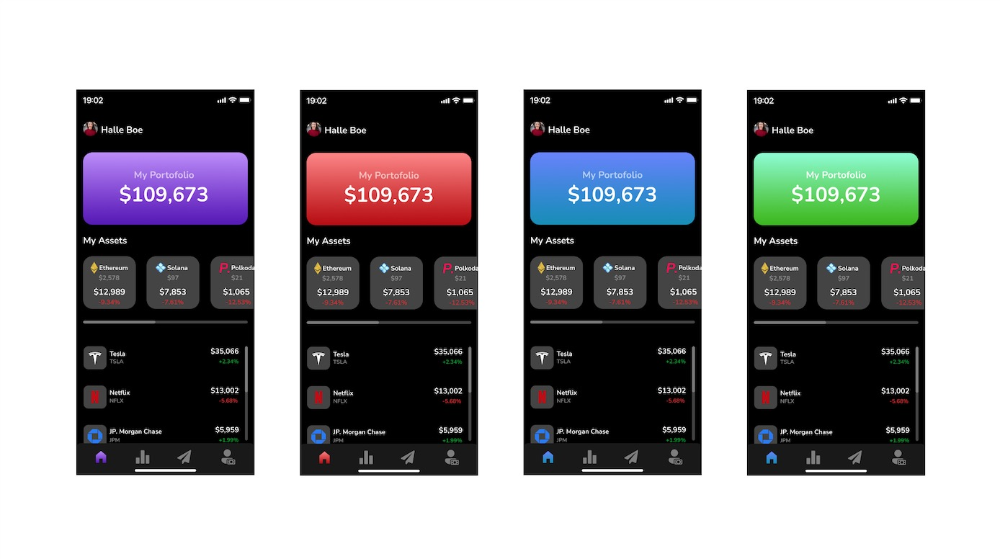

MOV.
Case Study
The Problem:
Many investors are forced to have their stocks and cryptocurrencies investments on separate platforms. Although there are valid reasons to why that is, it is still a major inconvenience to have to open up different apps to view and manage your stock and crypto portfolios.
The Solution:
We decided to come up with a platform that allows investors to check on their stock and crypto portfolios in one place.
Design Process:
I started by asking people who invests in both the stock market and cryptocurrency if they would use a platform that aggregates all of their invests and existing accounts.
I interviewed 8 people within the ages of 23 – 55.
List of Interviewee:
- Alpha Diallo, 23, Data center specialist.
- John Peter, 24, Software Engineer.
- Marcus Brown, 26, Realtor.
- Taylor Brooks, 31, Journalist.
- Mike Johnson, 35, Truck Driver.
- Fanta Kaba, 38, Teacher.
- Joseph Carlson, 40, Content Creator.
- Nancy Williams, 55, School Principal.

User Flows
Common Feedback:
- This would make my life so much easier.
- Beautiful design.
- Show more details on the dashboard.
- Very easy to use.
- Simple and straightforward, I love it!

Wireframes
Design screen shot in Figma

Testing light and dark background colors
Testing different color themes

Prototype in Figma
Market Comparison:
I conducted secondary research to see if there were apps with similar concepts and there were a few. However, all of them require the user create new accounts in order start banking and investing with them which defeats the purpose of the app of aggregating all of your existing accounts into one.
Takeaways:
The design process was fun and challenging at the same time. The research and interview process are tedious, however they are very crucial in order to find good solutions.
I enjoyed conducting user research by doing user interviews and converting the initial concept to designs based on feed-back received.